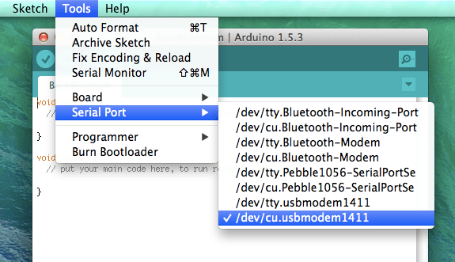

I've been playing around with the Intel Galileo with the intention of controlling electronics via my phone.
The Galileo is an Arduino that runs off of a special Linux distro, kind of like the Arduino Yún — but not exactly. So you can have the Galileo run a web server and visit it from your laptop web browser. Via the embedded web server, you can then control the pins on the Arduino (e.g. to turn LEDs on and off, spin motors, or gather sensor data).
A basic 'hello world' prototype should have been a relatively simple thing to cobble together with existing Arduino sketches but two things tripped me up:
If you've done Arduino programming on a Mac before, you probably have it ingrained in your head to choose /dev/tty.usbmodemXXXXXX from the Tools > Serial Port drop down.
However, if you're using the Galileo, it uses /dev/cu.usbmodem not /dev/tty.usbmodem.
So if you're wondering why your sketch is taking so long to upload to the board, or why you're beach balling while trying to update the Galileo firmware, double check that cu.usbmodem is selected.

If you're wondering if your computer is detecting the Galileo at all (for example, when you don't see any usbmodem devices listed under Tools > Serial Port), open up OS X's System Information.
Use Spotlight to open System Information. Or from the top Mac menu, choose Apple icon > About this Mac. Click More info. Click System Report. Then choose Hardware > USB.
If your computer sees the Galileo, an item called Gadget Serial will show up.
Note: Unlike Window's Device Manager, this panel does not automatically refresh when devices get plugged in or unplugged so use Cmd+R to periodically refresh the list.
The next hurdle I hit was an inability of my Gailieo to connect to my home's wifi network.
I could see it using the File > Examples > WiFi > ScanNetworks sketch:
But I just couldn't connect to it using the File > Examples > WiFi > ConnectWithWPA sketch:
I guessed that my connection issue was due to my home network using WPA2 but a comment in the example code made it sound like it should be okay:
// Connect to WPA/WPA2 network: status = WiFi.begin(ssid, pass);
At this point, it was late so I went to bed. Today, with fresh eyes, I set up a guest wifi account with my Airport router and used WPA/WPA2:
So now, if my laptop is on the same wifi network, I can visit http://172.16.42.3/ and control the on-board LED via my browser!
Light turns on. Light turns off. Light turns...
- Pearl
{kind=link}
{kind=link}
{kind=link}
{kind=link}
{kind=link}